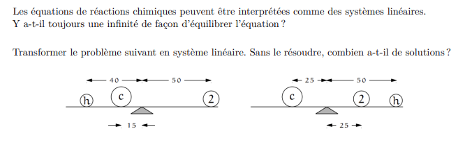
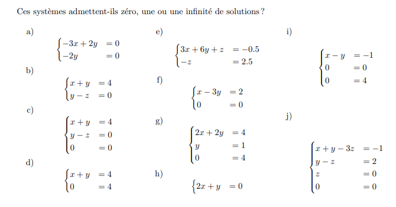

Algèbre linéaire
0 - Révisions
3 - Exercices
Exercice 1 : Equilibre

Oui, on peut toujours multiplier une solution par deux pour obtenir une autre solution
L'équilibre avec les deux balance possède en revanche une unique solution.
Exercice 2 : Combien de solutions ?

Pour cela :
- On utilise la première ligne pour retirer les $x$ des autres lignes
- On utilise la deuxième ligne pour retirer les $y$ des autres lignes
- ...
Trois cas possibles à la fin :
- Une équation incompatible (0 = 1)
- Échelonné jusqu'à la fin
- Échelonné avant la fin (0 = 0)
Cas 1 : Équation incompatible
Exemple :
$x + y = 1$
$x + y = 2$
$0 = 1$
Aucune solution !
Cas 2 : Solution unique
Exemple :
$x + y = 1$
$0 + y = 2$
Une seule solution : $x = -1, y = 2$
Cas 3 : Infinité de solutions
Exemple :
$x + y = 1$
Dans ce cas, on choisit une variable comme paramètre et on exprime les autres variables en fonction de ce paramètre
Infinité de solutions : $x = 1 - y, y \in \mathbb{R}$
Équilibrage de la réaction TNT
Réaction : $a C_7H_8 + b HNO_3 \rightarrow c C_7H_5O_6N_3 + d H_2O$
Système à résoudre :
$7a = 7c$ (C)
$8a + b = 5c + 2d$ (H)
$3b = 6c + d$ (O)
$b = 3c$ (N)
Points-clés
- Toujours bien aligner les variables
- Travailler étape par étape
- Vérifier ses calculs
- Identifier le type de solution